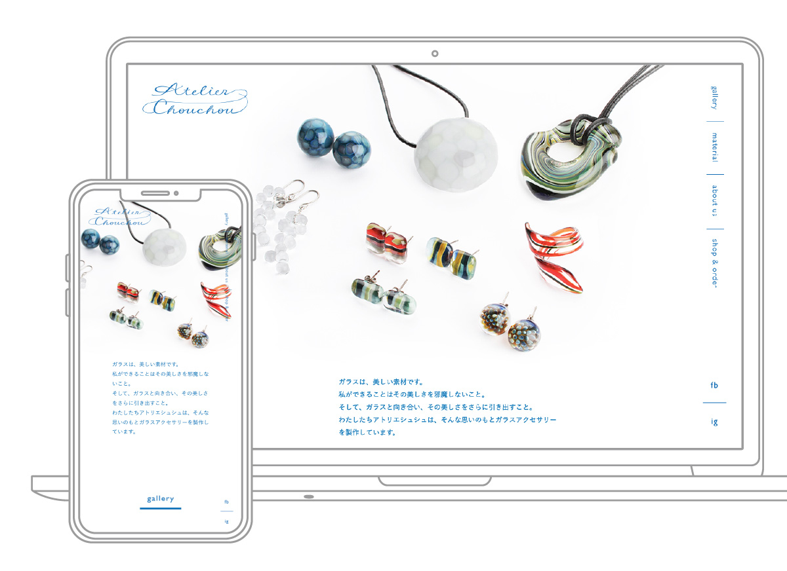
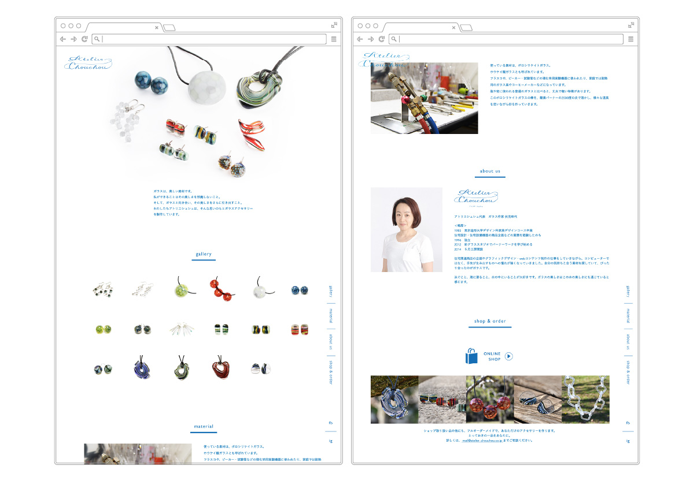

Atelier Chouchou
ウェブサイト / ロゴマーク
2018. 08


2018. 08
ガラス作家伏見珠代さんによる、ガラスアクセサリーブランド「Atelier Chouchou（アトリエシュシュ）」。主なターゲットである30〜50代の女性にあわせ、女性的な柔らかさと、高級感、洗練された雰囲気を感じさせるデザインを心がけました。
ガラスという素材が持つ美しさを大切にするという制作に対するコンセプトから、ガラスの涼やかさを感じさせる青色をメインに配色。透明感を意識して、余白の多い抜け感のある構成としました。
＜ BACK
© Moeri Ito